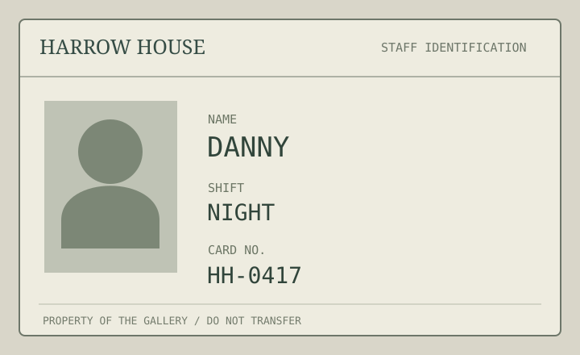

登记 0001 / 修订记录 / 原始附件
这不是一份完整的拾物登记
归还包 · 附件 01
扫描件未作文字识别。请自行核对工牌上的姓名、班次和编号。

归还包 · 附件 02
附件中保留的网址
Harrow House 馆务员工站 >>此站属于美术馆。工牌号、馆务账号和找回网客服号各自独立。
登记 0001 / 修订记录 / 原始附件
扫描件未作文字识别。请自行核对工牌上的姓名、班次和编号。

此站属于美术馆。工牌号、馆务账号和找回网客服号各自独立。